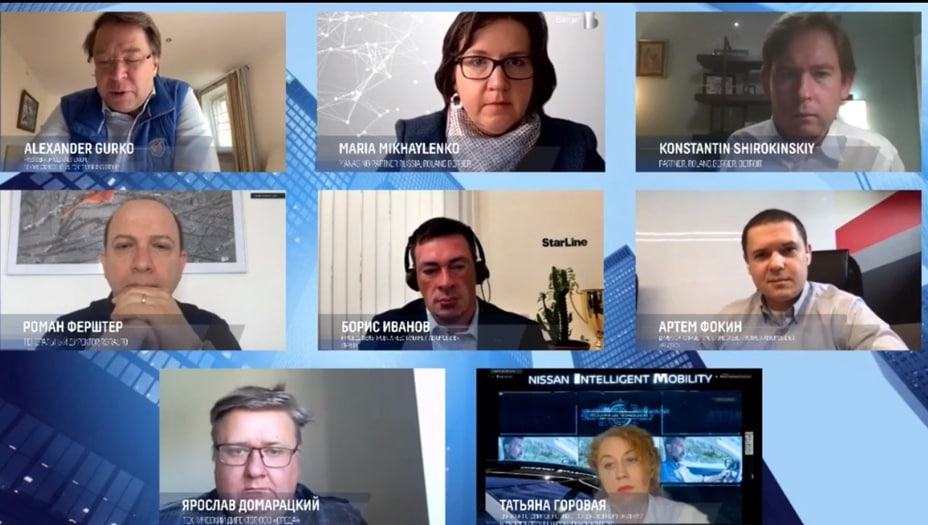

«Три-пять лет — срок, когда машины поедут. Момент их массового внедрения будет позже — надеюсь, к тому времени мы подготовим транспортную инфраструктуру. Самое сложное сейчас — предсказание поведения других участников дорожного движения. Утопично думать, что мы все разом перейдём на беспилотники — долгое время будут существовать оба типа автомобилей», — цитата Бориса Иванова (советский и российский актёр театра и кино)
Когда начнется массовое внедрение беспилотных автомобилей и дронов в нашу жизнь
Как пишет издание moika78: «Председатель комитета по транспорту Санкт-Петербурга Кирилл Поляков сообщил, что идет тренд на беспилотные автобусы и за ними будущее. По словам Полякова, трамвай «Чижик» пошел по пути «внедрения беспилотов» в августе. Сейчас водители-перегонщики ведут научно-исследовательские и опытно-конструкторские работы по реализации беспилотного движения. Предполагается использование автоведения на территории депо. При этом первым беспилотный транспорт появится на рельсах, то есть метрополитене и трамваях, а потом уже в автобусах» .
Оно и не случайно, ведь на рельсах почти некуда сворачивать, они являются таким типом дороги, который сам направляет движение транспорта. Тем более, трамвайное движение отделено от автомобилей значительно сильнее автобусного. Власти городов особо заботятся о своих жителях и любую диковину позволят ввести, в первую очередь, только на самых высоких стандартах безопасности и простоты.
Как пишет издание starline : «Эксперты из России, США, Германии и Китая поговорили о перспективах развития беспилотных технологий, умной городской мобильности и цифровизации транспортной логистики. Также были затронуты вопросы о последствиях мирового кризиса для автомобильного сектора.
В экспертной онлайн-дискуссии на тему будущего беспилотного транспорта, состоявшейся в рамках конференции, принял участие Борис Иванов, руководитель проекта «Беспилотный автомобиль StarLine». Его собеседниками стали представители компаний Roland Berger, НП «ГЛОНАСС», RGRAUTO, ООО «Яндекс», ООО «Ниссан Мэнуфэкчуринг РУС» и ООО «Среда».
В вопросе о причинах, тормозящих развитие беспилотных технологий в России и других странах мира, эксперты сошлись во мнении, что самой главной среди них сегодня является консервативность и медлительность в выпуске нормативных актов и инструментов законодательного регулирования касательно ситуации выхода беспилотного транспорта на дороги общего пользования. Как отметил Борис Иванов, уже сейчас необходимо прорабатывать вопросы ответственности в различных правовых вопросах, регламенты технических требований к безопасности беспилотников, поскольку процесс этот достаточно длительный.

решение вопроса о внедрении беспилотных атвомобилей на собрании с участием Бориса Иванова